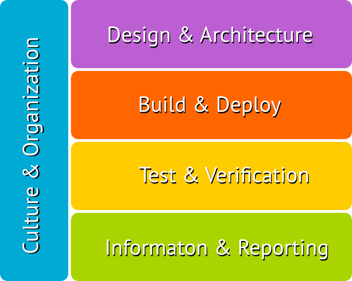
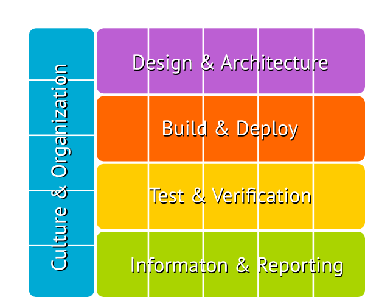
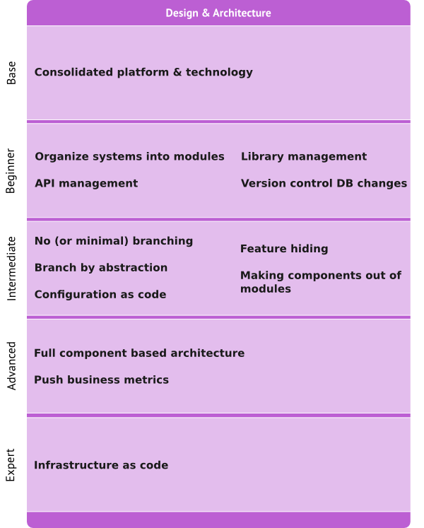
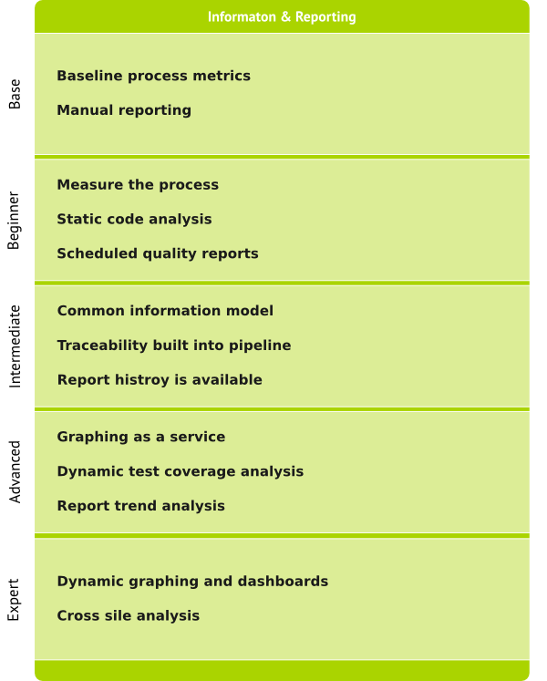

Our highest priority is to satisfy the customer through early and `continuous delivery` of valuable software.* Principles behind the Agile Manifesto #1
How long does it take you to deploy one line of code?

Long cycle times can be deadly
A robust delivery pipeline helps you to apply the agile practices and it is key to decrease time to production.
How often do you release changes?
Releasing changes frequently reduces the risk.
You can't get it by just buying a tool
so you should
ContinuouslyImprove
the Maturity
of your Continuous Delivery







Plan - Do - Act - Check
a case study from

have fun! ;)